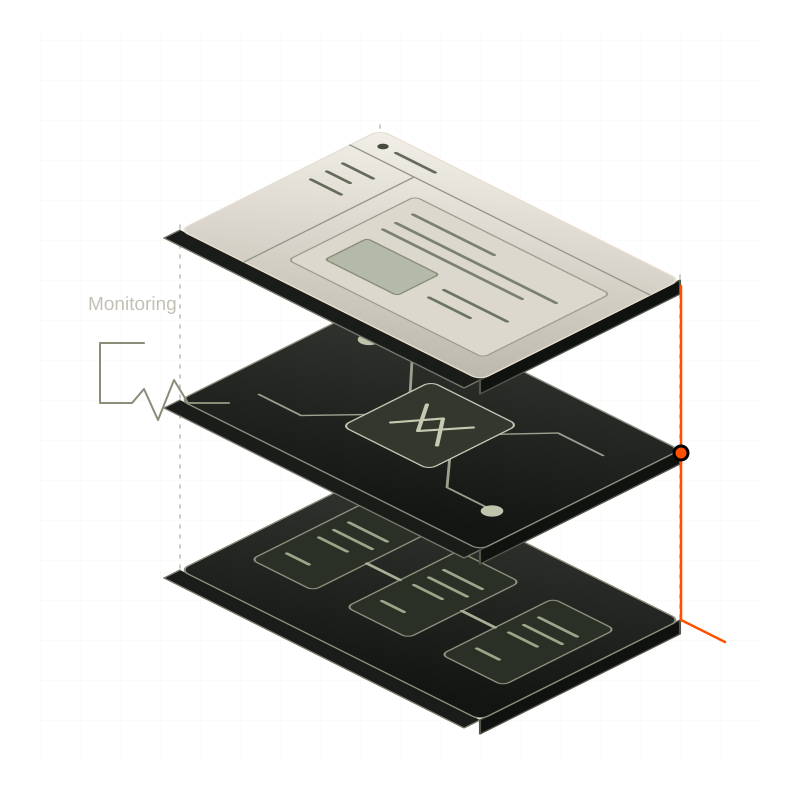

AI, engineered all the way to production.
EPOCH designs, builds and supports AI systems for enterprises like HUB International and Inspira Financial, with one team from the first model to long after launch.

Trusted by teams at
Selected work
Production systems for companies where getting it wrong is expensive.
Why EPOCH
- epoch, in computing
- Time zero: the fixed reference point that Unix time is counted from.
- epoch, in machine learning
- One complete pass through every example in the data. Nothing skipped.
We hold our work to both: a standard that doesn’t move, and a complete pass through every requirement, every edge case and every person who will use what we build.
What you can hold us to
The difference between a vendor and a partner is what happens when the plan meets reality.
AI that makes it to production
Plenty of AI looks good in a demo. We build the kind that holds up in production: the models, the agents and the data underneath them.